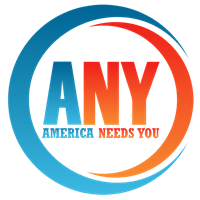

Case Study · Learning DesignI was the National Curriculum and Training Specialist at America Needs You, where the curriculum I wrote still reaches 1,000+ first-generation college students across 3 in-person locations and 70+ schools every year.
The Organization
America Needs You serves low-income, first-generation college students through mentorship, professional development, and career readiness programming. The students in this program are talented, motivated, and navigating systems that were not designed with them in mind.
My role was to build the curriculum that made the programming work. That meant two parallel tracks: First-Gen U, an online learning program adopted by 70+ campuses, and a monthly in-person workshop series running across four cities.
The Challenge
The online program, First-Gen U, needed to work as self-paced SCORM modules that any campus could adopt without my being in the room. The workshop program ran monthly in New York, New Jersey, Chicago, and California, each with different instructor teams, different venues, different resources, and different styles.
I was building curriculum for teams that would execute it independently. The question wasn't just "is this good content?" It was "can I trust that this will be delivered well by people I'm not standing next to?" That meant building in accountability without surveillance. Clear frameworks, strong facilitation guides, and enough structure that teams could make it their own without drifting from the intent.
The other challenge was the content itself. We were teaching professional norms to students who might have never been taught the unspoken rules of the workplace. Not just how to write a resume or answer interview questions, but how to navigate workplace culture, communicate across different professional styles, and advocate for yourself in spaces that weren't built for you. The tension was doing that honestly, without asking students to perform a version of professionalism that erased who they actually are.
The Approach
I started the way I start every project: by listening. I used design thinking with the staff to empathy-interview facilitators, mentors, and program alumni. I needed to understand what was working, what wasn't landing, and where the curriculum needed to meet people differently.
The curriculum I built was deliberately experiential. These were busy people on both sides of the table. The scholars were students balancing school and work. The mentors were professionals in their 30s, 40s, and beyond who had volunteered their time and had serious connections to share. Polite conversation and generic advice weren't going to cut it. We needed real outcomes in every session.
That meant mock interviews, resume workshops, courageous conversations about identity and professional culture, role-playing, deep article discussions, and discussion-based protocols that pushed both scholars and mentors beyond surface-level interaction. Many mentors found themselves bringing frameworks back into their own organizations after being reminded of things they'd stopped thinking about.
Built SCORM modules adopted by 70+ campuses, reaching 1,000+ students per year. Designed to work without a facilitator in the room, with clear learning paths and self-assessments.
Monthly workshops across NYC, NJ, Chicago, and California. Each city had different teams and contexts. I built facilitation guides strong enough to maintain quality while giving teams room to adapt.
Conducted interviews to capture best practices from the strongest facilitators, then built internal professional development and onboarding for new educators joining the program. Also held internal workshops on design thinking and AI use.
Updated the curriculum to reflect the real complexity of diversity. Not just race and background, but communication styles, working habits, and the gap between institutional expectations and lived experience.
The Results
I was at America Needs You for a year. The curriculum I built gave the program a foundation that the team has continued to develop and evolve. The online modules are scalable. The workshop guides are detailed enough that new facilitators can pick them up and deliver with quality. The internal training pipeline means institutional knowledge doesn't walk out the door when someone leaves.
The best measure of a curriculum isn't whether people liked it while you were on stage charismatically delivering it. It's whether the systems keep working after you leave.
Why It Matters
This was my first major curriculum project, and it shaped how I think about every engagement since. The work at ANY taught me that the hardest design problems aren't technical. They're human. How do you respect someone's time? How do you create a space where a 20-year-old and a 50-year-old are both learning? How do you teach professional norms without flattening the people you're teaching them to?
These questions don't have clean answers, but asking them made the curriculum better. More experiential, more focused on the learner's experience. It allowed me to build consensus around the fact that we didn't need more slide decks. We needed community norms, discussion protocols, and experiences.
Want curriculum that works after you leave the room?
See how I work